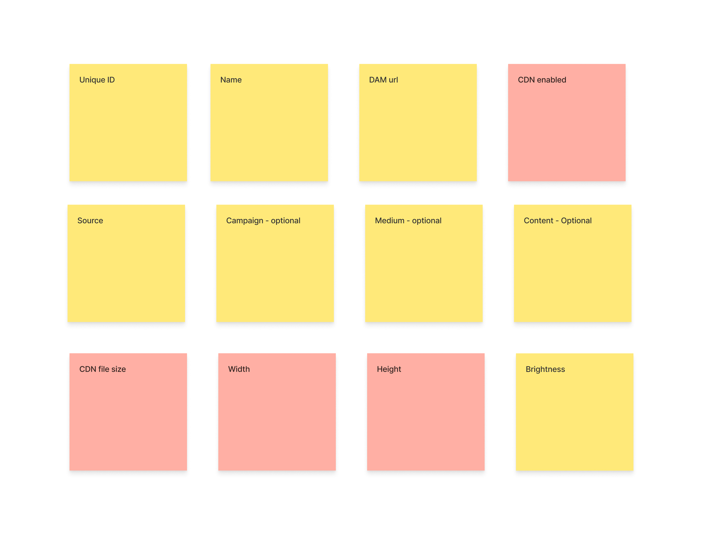

<!DOCTYPE html><html lang="en" id="top"><head><meta charset="UTF-8"/>
<meta name="viewport" content="width=device-width, initial-scale=1.0">
<meta http-equiv="X-UA-Compatible" content="IE=edge"/><title>Chris Norton: Designer</title><link rel="preconnect" href="https://fonts.googleapis.com">
<link rel="preconnect" href="https://fonts.gstatic.com" crossorigin><!--link(href='https://fonts.googleapis.com/css2?family=Open+Sans:wght@400;700&family=Source+Sans+3&display=swap', rel='stylesheet')--><link href="https://fonts.googleapis.com/css2?family=Arimo:ital,wght@0,400..700;1,400..700&amp;family=Source+Sans+3&amp;display=swap&amp;display=swap" rel="stylesheet"/><link rel="stylesheet" href="https://cdnjs.Cloudflare.com/ajax/libs/font-awesome/4.7.0/css/font-awesome.min.css"/><link rel="stylesheet" href="styles/styles-2025.css"/><script src="js/polyfill.min.js"></script></head></html><body><div class="wrapper bg-light-1"><div class="page"><header><h1>Christopher Norton</h1><nav><a href="index.html">Home</a><a href="index.html#projects">Projects</a><a href="#contactForm">Contact</a><a class="linkedin" href="https://www.linkedin.com/in/christopher-p-norton/" target="_blank"></a></nav></header><section class="bubble"><div class="content"><div class="page-nav top"><a class="back" href="index.html#projects"><svg width="24" height="24" viewBox="0 0 24 24" fill="none" xmlns="http://www.w3.org/2000/svg">
<path d="M20 18V20H13.5C9.91 20 7 17.09 7 13.5V7.83L3.91 10.92L2.5 9.5L8 4L13.5 9.5L12.09 10.91L9 7.83V13.5C9 16 11 18 13.5 18H20Z" fill="black"/>
</svg>Projects</a></div><h2 class="overline">Aprimo</h2><!--a(href='https://chrome.google.com/webstore/detail/aprimo-quickconnect/lgifolfphnohppapdhljncfahjaedmea' target='_blank') Chrome Web Store - QuickConnect--><p class="overline">DAM & Marketing Ops Applications</p><div class="tags"><div class="tag ux">UX</div><div class="tag ui">UI</div><div class="tag uxr">UXR</div></div><p style="text-align: center;"></p><h3>Impact Summary</h3><ul><li>Helped the business course-correct by finding features most important to users</li><li>Retained existing customers while successfully hitting thresholds to deprecate legacy products</li><li>Cut tech debt and reduced load on support with fewer calls and reduced design and development time by introducing solid reusable information architecture</li><li>Reduced time and complexity on common widely used user actions</li><li>Reduced cognitive load by providing inline context and enabling direct manipulation</li></ul><h6>First month at Aprimo</h6><p style="text-align: center;"></p><h6>First 3 months - UX Chapter</h6><ul><li>After my first 3 months I took over running the company-wide UX chapter for our team of designers and ran the meeting for leadership in USA, UK, Germany, Netherlands and Belgium</li><li>Updated teams on future suggestions, design patterns and documentation</li><li>Recorded and managed issues affecting multiple dev teams</li><li>Sent out emails to attendees recording decisions made and to do items</li></ul></div></section><section class="bg-dark-2"><div class="content"><h3>Digital Asset Management (DAM) & Marketing Ops Applications</h3><p>During my time at Aprimo I designed and built prototypes for many features and zero to one projects. To give you a sense of scale and complexity, the full video training alone for DAM and Marketing Ops took close to 6 weeks to complete so this in no way covers the full extent of any single application.</p><h6>Aprimo Ecosystem</h6><ul><li>Multiple enterprise-level web and mobile applications</li><li>Legacy versions of similar products</li><li>Spin-off integration apps like plugins for Adobe Suite and Chrome extensions</li></ul></div></section><section class="bg-light-3"><div class="content"><h3>Aprimo DAM</h3><p>Helps companies store, organize, collaborate, and generate a wide range of content items.</p><h6>Sample CTAs</h6><ul class="bubble-list"><li>CRUD (Create, read, update and delete) content items</li><li>Organize, search, and download existing content and branding</li><li>Integrate content changes within external applications like Adobe to update back to the server</li><li>Manage usage rights and govern access and permissions</li><li>Track and audit content status through revision history and duplication detection</li><li>Dynamically generate new content via CDN functions</li><li>Leverage existing content libraries to build LLMs and generate new on - brand content</li></ul></div></section><section class="bg-light-2"><div class="content"><h3>Marketing Ops</h3><p>Helps companies manage marketing efforts including strategy, campaigns and collaboration with team members across managed timelines.</p><h6>Sample CTAs</h6><ul class="bubble-list"><li>Assign team members to tasks</li><li>Plot out release dates and checkpoints</li><li>Audit and govern content releases</li></ul></div></section><section><div class="content"><div class="design-roadmap"><div class="overview"><h3>Design Roadmap</h3><p>Working in the newspaper industry early on drilled in the importance of the 5 W’s for writing a story but it’s a great foundation for project building too. It’s really difficult to design solutions and discuss trade-offs if you don’t know the context of the why, who, where or when. It’s also hard to know if it actually worked unless you answer the how.</p></div><div class="questions"><div class="question"><h6>Why</h6><ul><li>Why are we building this?</li><li>What problems are we trying to solve?</li></ul></div><div class="question"><h6>Who, Where, When</h6><ul><li>Who am I building this for?</li><li>Where and when and will it be used?</li></ul></div><div class="question"><h6>What</h6><ul><li>What solution are we building?</li><li>How do we prioritize solutions?</li></ul></div><div class="question"><h6>How</h6><ul><li>How can we measure impact and growth to validate the solution?</li></ul></div></div></div></div></section><section class="bg-light-3"><div class="content"><h3>Why</h3><h6>Content Item Preview (Legacy Conversion)</h6><p>Aprimo couldn’t retire their legacy DAM app because users weren’t switching over to the new DAM app.</p><h6>Project Goals</h6><ul><li>Stop supporting 2 systems!</li><li>Speed up design decisions and prototyping</li><li>Allow development teams to work on new competitive features vs supporting decades old flows</li><li>Reduce load and training for customer support by supporting fewer products</li><li>Get a threshold number of users off the legacy app.</li></ul></div></section><section class="bg-light-1"><div class="content"><h3>Who, Where, When</h3><h6>Framing Goals into Solvable Problems</h6><p>Before I could design a better experience I really needed to know the who, where, when and why users weren’t switching over to a more modern-looking app that supposedly had feature parity. So what gives? What got missed?</p></div></section><section class="bg-white"><div class="content"><h4>Problem 1: Why aren’t users switching over?</h4><p>Tracing paths using Pendo I found 3 segments still spending time in the legacy application.</p><p></p><h6>System - Form Redirects</h6><p>Forms were pointing users to legacy pages after submitting.</p><h6>System - API CONFIG</h6><p>API calls from custom client software were pulling from legacy areas of the system.</p><h6>Human - Actual Usage</h6><p>Most jumps from real users happened around content items which can be accessed by the following users:</p><ul class="user-list"><li>Marketers</li><li>Content creators</li><li>Librarians</li><li>Admin</li></ul></div></section><section class="bg-light-1"><div class="content"><h4>Problem 2: What are users doing to the content item</h4><p>I found which users were hitting the old system but we stalled here for a bit because actions on the content item don’t necessarily go to individual trackable pages and we’d need to push missing tracking hooks to get a better look at what users were actually doing with the content item in the old system vs the new system. We could solve part of the problem now though with a few suggested solutions.</p></div></section><section class="bg-light-2"><div class="content"><h4>Solution Prioritization</h4><p>Fixing the bad configurations and enabling hooks would get us closer to the cutoff threshold and were high-impact, low effort. Forms in DAM and Marketing Operations apps could be pointed away from legacy pages and we could have customer service reach out to high-volume system administrators individually to fix their API settings. We could implement both of the system-level solutions while we waited for more user hooks.</p><figure class="grapph-priority"><h6>Round 1 Prioritization</h6><small>A. Fix Form Redirects</small><small>B. Fix API Configurations</small><div class="point approved" style="top: 15%; left: 18%;"><span>👍</span>A<!--<svg xmlns="http://www.w3.org/2000/svg" viewBox="0 0 512 512"><path fill="#65DDA7" d="M313.4 32.9c26 5.2 42.9 30.5 37.7 56.5l-2.3 11.4c-5.3 26.7-15.1 52.1-28.8 75.2l144 0c26.5 0 48 21.5 48 48c0 18.5-10.5 34.6-25.9 42.6C497 275.4 504 288.9 504 304c0 23.4-16.8 42.9-38.9 47.1c4.4 7.3 6.9 15.8 6.9 24.9c0 21.3-13.9 39.4-33.1 45.6c.7 3.3 1.1 6.8 1.1 10.4c0 26.5-21.5 48-48 48l-97.5 0c-19 0-37.5-5.6-53.3-16.1l-38.5-25.7C176 420.4 160 390.4 160 358.3l0-38.3 0-48 0-24.9c0-29.2 13.3-56.7 36-75l7.4-5.9c26.5-21.2 44.6-51 51.2-84.2l2.3-11.4c5.2-26 30.5-42.9 56.5-37.7zM32 192l64 0c17.7 0 32 14.3 32 32l0 224c0 17.7-14.3 32-32 32l-64 0c-17.7 0-32-14.3-32-32L0 224c0-17.7 14.3-32 32-32z"/></svg>--></div><div class="point" style="top: 10%; left: 27%;"><span>👍</span>B<!--<svg xmlns="http://www.w3.org/2000/svg" viewBox="0 0 512 512"><path fill="#65DDA7" d="M313.4 32.9c26 5.2 42.9 30.5 37.7 56.5l-2.3 11.4c-5.3 26.7-15.1 52.1-28.8 75.2l144 0c26.5 0 48 21.5 48 48c0 18.5-10.5 34.6-25.9 42.6C497 275.4 504 288.9 504 304c0 23.4-16.8 42.9-38.9 47.1c4.4 7.3 6.9 15.8 6.9 24.9c0 21.3-13.9 39.4-33.1 45.6c.7 3.3 1.1 6.8 1.1 10.4c0 26.5-21.5 48-48 48l-97.5 0c-19 0-37.5-5.6-53.3-16.1l-38.5-25.7C176 420.4 160 390.4 160 358.3l0-38.3 0-48 0-24.9c0-29.2 13.3-56.7 36-75l7.4-5.9c26.5-21.2 44.6-51 51.2-84.2l2.3-11.4c5.2-26 30.5-42.9 56.5-37.7zM32 192l64 0c17.7 0 32 14.3 32 32l0 224c0 17.7-14.3 32-32 32l-64 0c-17.7 0-32-14.3-32-32L0 224c0-17.7 14.3-32 32-32z"/></svg>--></div></figure></div></section><section class="bg-light-4"><div class="content"><h3>How</h3><h6>Validation</h6><p>We’d know these worked when the old API stopped receiving requests. Visits to legacy pages targeted by forms should also be going down.</p></div></section><section class="bg-dark-2"><div class="content"><p></p><h4>Back to Problem 1</h4><p>With feature tracking hooks installed in Pendo I found that user actions were focused around searching for and downloading DAM content and were bouncing back to the legacy system to browse content catalogs with larger previews.</p></div></section><section class="bg-light-3"><div class="content"><h3>What</h3><h6>Prototyping</h6><p>The new system changed the flow to get to a larger preview.</p><h6>Old system flow:</h6><ol><li>Search query</li><li>Results page</li><li>Click on a result to go to the result detail page with large preview</li><li>Click back to the results page and on another result to view other large previews</li></ol></div></section><section class="bubble"><div class="content"><h3>Prototype A - Intermediate preview with full screen</h3><p><a href="https://www.figma.com/proto/w6g6pVKf3yWhLILAhNE8DZ/Content-Item-%E2%80%93-Preview-Side-Panel?page-id=244%3A449294&amp;node-id=244-454527&amp;p=f&amp;viewport=-2501%2C1412%2C0.13&amp;t=2a4RKsuINpcVgrlB-1&amp;scaling=min-zoom&amp;content-scaling=fixed&amp;starting-point-node-id=244%3A454527&amp;show-proto-sidebar=1" target="_blank"><div class="figma-ptorotype">View Figma Prototype</div></a></p><h6>New Flow</h6><ol><li>Search query</li><li>Results page</li><li>(Goal) Click on a result to see a preview</li><li>Use previous and next buttons or arrow keys to move between results without leaving the large preview</li></ol><p>👍 Identify content faster with a larger preview side window</p><p>👍 Allow full screen browsing</p><p>👍 Creates a selected card state allowing users to mark their place while browsing results</p><p>👍 Makes content type more visual with dynamic preview window</p><p>👍 More upfront access to metadata</p><p>👍 Use arrow keys to quickly move between items and not lose your place</p></div></section><section class="bubble"><div class="content"><h3>Prototype B - show sibling items fullscreen after clicking on the card</h3><p><a href="https://www.figma.com/proto/w6g6pVKf3yWhLILAhNE8DZ/Content-Item-%E2%80%93-Preview-Side-Panel?page-id=105%3A16135&amp;node-id=109-17192&amp;p=f&amp;viewport=605%2C472%2C0.28&amp;t=6BgkgFwUCpNRBLcw-1&amp;scaling=min-zoom&amp;content-scaling=fixed&amp;starting-point-node-id=109%3A16147" target="_blank"><div class="figma-ptorotype">View Figma Prototype</div></a></p><h6>New Flow</h6><ol><li>Search query</li><li>Results page</li><li>(Goal) Click on a result to see a preview fullscreen</li><li>Use previous and next buttons or arrow keys to move between results without leaving the large preview</li><li>Close button to exit fullscreen mode</li></ol><p>👍 Identify content faster with a larger preview side window</p><p>👍 Use arrow keys to quickly move between items</p><p>👎 Loses context of cards appearing before the selection</p></div></section><section class="bg-white"><div class="content"><h4>Solution Prioritization</h4><p>During demos A was received very well while B was found to be confusing and was jarring for a lot of stakeholders.</p><figure class="grapph-priority"><h6>Round 2 Prioritization</h6><small>A. Intermediate Preview</small><small>B. Sibling Preview Window</small><div class="point approved" style="top: 10%; left: 80%;"><span>👍</span>A<!--<svg xmlns="http://www.w3.org/2000/svg" viewBox="0 0 512 512"><path fill="#65DDA7" d="M313.4 32.9c26 5.2 42.9 30.5 37.7 56.5l-2.3 11.4c-5.3 26.7-15.1 52.1-28.8 75.2l144 0c26.5 0 48 21.5 48 48c0 18.5-10.5 34.6-25.9 42.6C497 275.4 504 288.9 504 304c0 23.4-16.8 42.9-38.9 47.1c4.4 7.3 6.9 15.8 6.9 24.9c0 21.3-13.9 39.4-33.1 45.6c.7 3.3 1.1 6.8 1.1 10.4c0 26.5-21.5 48-48 48l-97.5 0c-19 0-37.5-5.6-53.3-16.1l-38.5-25.7C176 420.4 160 390.4 160 358.3l0-38.3 0-48 0-24.9c0-29.2 13.3-56.7 36-75l7.4-5.9c26.5-21.2 44.6-51 51.2-84.2l2.3-11.4c5.2-26 30.5-42.9 56.5-37.7zM32 192l64 0c17.7 0 32 14.3 32 32l0 224c0 17.7-14.3 32-32 32l-64 0c-17.7 0-32-14.3-32-32L0 224c0-17.7 14.3-32 32-32z"/></svg>--></div><div class="point" style="top: 60%; left: 25%;">B</div></figure></div></section><section class="bg-light-1"><div class="content"><h3>How</h3><h6>Validation</h6><ul class="checkmark-list"><li>Over a rolling 90 days, we started seeing users shifting over to the new system.</li><li>Reduced bounce rate to legacy app</li><li>Reduced time to find and download content item</li><li>Feature clicks to expand content items to fullscreen</li></ul></div></section><section class="bg-light-2"><div class="content"><h3>Impact</h3><h6>User</h6><ul><li>Found content to download faster</li><li>Arrow keys were picked up intuitively</li><li>Less switching between old and new applications</li></ul><h6>Business</h6><ul><li>Helped the business course-correct by finding features most important to users</li><li>Retained existing customers while successfully hitting thresholds to deprecate legacy products</li><li>Cut tech debt by half</li><li>Reduced load on support with fewer calls</li></ul></div></section><section class="bg-light-1"><div class="content"><h3>Achieved Business Goals</h3><ul class="checkmark-list"><li>Speed up design decisions and prototyping</li><li>Allow development teams to work on new competitive features vs supporting decades old flows</li><li>Reduce load and training for customer support by supporting fewer products</li></ul></div></section><section class="bg-white"><div class="content"><p style="text-align: center;"></p><h3>More on Managing complex design decisions with OOUX</h3><p>Content items are used throughout all of Aprimo's enterprise level applications so even the smallest change has the potential to break consistency and functionality across the entire platform of apps. Additionally content items are represented across different levels of fidelity inside different features.</p><p style="text-align: center;"></p><h6>Affected Applications</h6><ul><li>DAM</li><li>Marketing Ops</li><li>Legacy Apps</li><li>Browser Plugins</li></ul><h6>Fidelity Levels of a Content Item</h6><ul><li>Card</li><li>List/Table Row</li><li>NEW - Intermediate Preview</li><li>Full Detail Page</li></ul><p style="text-align: center;"></p><h3>Building consistency across fidelity.</h3><p>The trick to getting any object to feel similar across various levels of fidelity is to keep the order of properies and provide similar styling callbacks. To compare all the instances of content items I audited the visibility and order of attributes using Object Maps.</p><p style="text-align: center;"></p><h3>Object Maps</h3><p>Mapping out the information architecture for core objects with OOUX inside AirTable allowed me to track variations of how a content item appears across the platform and between features. It's a methodical way to uncover decades of inconsistency and flag missing expected functionality that is critical to making things feel intuitive. Mapping objects this way also provides a chance to consolidate code and point out opportunities for reusable components.</p><p style="text-align: center;"></p><h3>Preventing Future Chaos</h3><p>By tracking parents or children of ojects in OOUX I also knew which related objects would also need consideration if any functionality changed. For example what should happen to a user-created content item in the system if the user who created it is removed? Should it get removed as well or just display a missing token where the source link is normally?</p><p style="text-align: center;"></p><h3>Tracking Complex Decisions</h3><p>Tracking objects in AirTable allowed me tag object properties with release data so I could dynamically filter on what's really necessary. I also attached questions that needed to be sent to various groups or flagged for validation.</p><p style="text-align: center;"></p><p style="text-align: center;"></p><div class="page-nav bottom"><a class="back" href="index.html#projects"><svg width="24" height="24" viewBox="0 0 24 24" fill="none" xmlns="http://www.w3.org/2000/svg">
<path d="M20 18V20H13.5C9.91 20 7 17.09 7 13.5V7.83L3.91 10.92L2.5 9.5L8 4L13.5 9.5L12.09 10.91L9 7.83V13.5C9 16 11 18 13.5 18H20Z" fill="black"/>
</svg>Projects</a></div></div></section></div></div><footer class="bg-light-4"><div class="about-me"><h6>Christopher Norton</h6><p>Senior designer with experience in UX/UI launching 26 new products and countless features for web and mobile in the last 10 years. Able to lead, execute, analyze, and iterate on products from start to finish for cross-functional and regionally diverse teams. Strong problem-solving skills and a design thinker with a proven track record in enterprise-level B2B, B2C and SaaS products for clients such as: <strong>Boeing</strong>, <strong>Dell</strong>, <strong>John Deere</strong>, <strong>Booz Allen</strong>, <strong>Animal Planet</strong>, <strong>The Learning Channel</strong>, and others.</p><small><strong>Hidden Gem</strong>: I also developed this site from scratch using HTML5, CSS3, and JS using Node.js to run a local preview server which compiles and minifies Sass on the fly with Autoprefixer, CSS Lint and ES Lint. Version control is run through Github pages. I have wide a wide range of skills enabling me to bridge the communication gap between business stakeholders, designers and engineering teams.</small></div><div class="social-links"><h4 style="color: #345f7d">Site</h4><a href="index.html">Home</a><a href="index.html#projects">Projects</a><a href="https://www.linkedin.com/in/christopher-p-norton/" target="_blank">LinkedIn</a><a href="downloads/chris_norton_resume_ux_designer_2025-3.pdf" target="_blank">Resume</a></div><form method="post" name="contactForm" id="contactForm"><h6>Contact Me</h6><div class="form-group"><label for="fullName">Full Name</label><input name="fullName" id="fullName" type="text"/></div><div class="form-group"><label for="email">Email</label><input name="email" id="email" type="text"/></div><div class="form-group"><label for="message">Message</label><textarea name="message" id="message" rows="7"></textarea></div><div class="form-group"><button type="submit" id="submitContact">Send</button></div><div class="form-group"><small id="formStatus">Your message has been sent.</small></div></form></footer><script src="js/contact.js"></script></body>